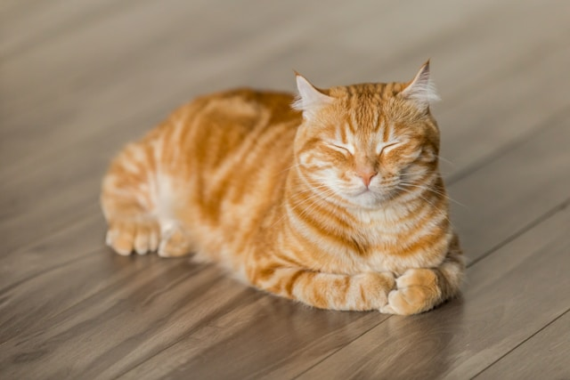

object-fit속성을 사용하여 img태그나 video태그 두 종류의 태그에 대해 원본 가로세로 비율을 해치지 않는 범위안에서 사이즈를 조절할 수 있다.
가로와 세로 둘중 한개만 수정하지 않고 가로 세로 둘다 사이즈를 변경한다면 원본비율을 해칠 수 있다.(해치지말라)
원본사이지 가로 640픽셀 세로 427픽셀
운본비율을 유지하면서 태그의 가로세로 사이즈를 조절
이미지나 영상의 크기를 조절할 때 절대 짤리지 않는 선에서 크기를 최대한 맞추는 방식
이미지 영상의 크기가 잘리더라도 지정한 가로와 세로사이즈를 무조건 가득 채우는 방식